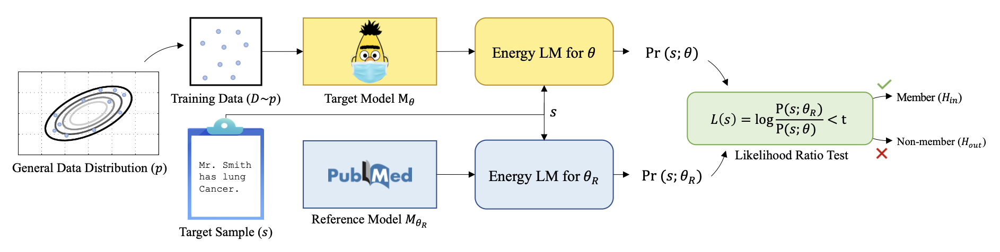

Quantifying Privacy Risks of Masked Language Models Using Membership Inference Attacks
Mireshghallah, Goyal, Uniyal, Berg-Kirkpatrick & Shokri · EMNLP 2022
A paper presentation for CSCI 699 at USC. The paper is by Mireshghallah, Goyal, Uniyal, Berg-Kirkpatrick and Shokri (EMNLP 2022). This page is my summary and my reading of it.
The question
BERT-style models are fine-tuned on data nobody would publish: hospital notes, legal filings, internal email. The weights get shared; the notes do not. Can someone holding the model tell whose records it was trained on? Membership alone is a breach: confirming that a sentence from one patient's record trained a model built on an HIV clinic's notes reveals that the person was a patient there. The case study is ClinicalBERT, trained on MIMIC-III (about 1.25M health records from 46,520 patients).
Why earlier work said MLMs were safe
Prior attacks thresholded the model's loss: a low loss means "the model has seen this". On ClinicalBERT-Base that gives AUC 0.66 and only 15.6% recall at a 10% false-positive rate, so the field concluded masked LMs memorize little. The paper argues this was a weak attack, not a safe model. Loss measures difficulty, not memory: "The patient is stable." looks familiar to every medical model, and "Pt c/o SOB x3d, Hx CHF" looks strange even to one that trained on it.
The idea: compare against a reference model
Score the sentence under the target model and under a reference model that never saw the training data (PubMed-BERT), and look at the gap. If both find it easy, it is just an easy sentence. If only the target does, the target memorized it. Formally this is a likelihood ratio test, the optimal test for this kind of hypothesis.

The obstacle is that a masked LM has no sentence probability; it only fills in blanks. The fix
is to treat the MLM as an energy-based model, with p(s) = exp(−E(s)) / Z. The
normalizer Z cannot be computed, but it depends only on the model, so in the ratio it becomes one
global constant and cancels. The score reduces to
L(s) = E(s; target) − E(s; reference), where energy is the average fill-in-the-blank
loss over K = 10 random 15% masks. No shadow models are trained; scoring takes about 18 GPU-hours.
Results
- Sample level: AUC 0.66 → 0.90, recall at 10% FPR from 15.6% to 79.2%, at 88.9% precision.
- At 1% FPR, the regime a real attacker works in, the attack is 51× stronger than prior work.
- Patient level, aggregating all of one patient's notes: AUC 0.992. "Was this person a patient here?" is answered almost perfectly.
- Leakage grows with sentence length and model size, and inserting patient names raises AUC to 0.96 while lowering the loss baseline to 0.56. An in-domain reference model matters: plain BERT drops recall from 79.2% to 71.5%.
Defenses
Differential-privacy training is the only defense with a worst-case guarantee, at a cost in accuracy. Scrubbing identifiers, deduplication, regularization and hiding scores all help without guaranteeing anything.
My take
The strongest contribution is reframing a negative result: the models were never safe, the attack was weak. It is principled and cheap, and it reports low-FPR numbers rather than just AUC. The limits are that it needs a good same-domain reference model, it is tested only on clinical BERT, the sensitivity to K is not explored in the main text, and licensed data with gated code makes it hard to reproduce.
Why it belongs in a side-channel course: strictly, it is not a side channel, because the signal is the model's own output. But the pattern is the same one used all semester. A raw measurement is confounded by noise (sentence difficulty here, clock frequency or system load there), and calibrating against a baseline makes the real signal appear, just like setting a hit/miss threshold in Flush+Reload. The natural next step is membership or prompt inference on an LLM through a timing or hardware channel instead of scores.